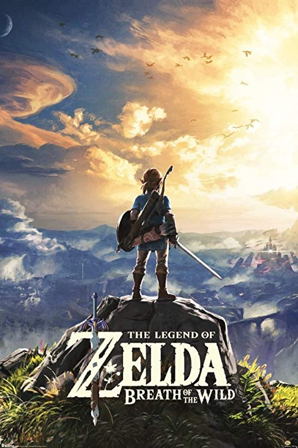

Breath of the Wild embodies the freedom and danger of that made the first Zelda game so enthralling and captures the feeling of that came when Ocarina of Time hit the scene... It's safe to say that BotW will forever change what people expect from the series.-Gamespot
The game, Legend of Zelda: Breath of the Wild, developed and published by Nintendo. Breath of the Wild or BOTW (how I'll refer to it for the rest of the article) is an action adventure game that takes place at the end of the Zelda timeline. This game is one of my absolute favorite games of all time. It brings back the classic zelda that everyone loves while jumping into new lands and gameplay. With the massive open world around you, you are reminded of how small your character is. This game is an absolute must buy.
This Zelda game is not the same adventure or world of Hyrule you might remember as a child. Oh no, this game is a completely different game. It is what makes it especially amazing, it is unlike any other Zelda. BOTW opens with our hero, Link, waking up from a hundred years sleep. He wakes up in a new evolved Hyrule, with different creatures, people and threats. He lives in a free world where you can do almost anything you want, hunt animals, go fishing, collect loot, sell treasure, cook, and many more. The main storyline has you run through a decently long quest line where you defeat four Divine Beasts then the main villain, Calamity Ganon.
Breath of the Wild is a game that gaves you a sense of achievement through freedom and adventure. The game is all about getting lost. Now yes this can be problematic for some, but for many hardcore Zelda fans, it brings back something that was lost from the original Zelda game. The extremely large landscape leaves you with many things to do. from discovering new landmarks, doing complex puzzles, or defeating enemy camps, there are many options for all kinds of people.
This game will leave you with at least 60 hours of gameplay just to complete the game. For a game that is a lot of time and extremely well worth the money. BotW has too much content to skip out on. With every encounter, you are bound to learn something new with the crazy fun interactions there are between players, objects, and the environment. Breath of the Wild is a game that every gamer should have in their arsenal and should even be played by casual gamers. 10/10 recommend this game to everyone.
Game Review by Karl Camara